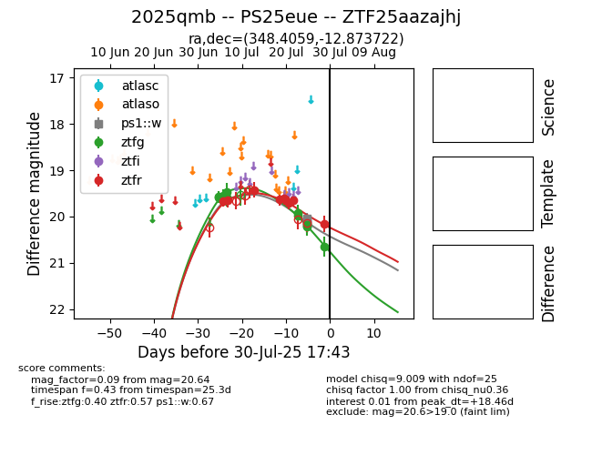

Target 2025qmb at 2025-07-30 17:43, see:
FINK: fink-portal.org/2025qmb
Lasair: lasair-ztf.lsst.ac.uk/objects/2025qmb
ALeRCE: alerce.online/object/2025qmb
TNS: wis-tns.org/object/2025qmb
YSE: ziggy.ucolick.org/yse/transient_detail/2025qmb
alt names
ZTF25aazajhj (ztf,fink)
2025qmb (tns,yse)
PS25eue (panstarrs)
coordinates:
equatorial (ra, dec) = (348.4059,-12.87372)
galactic (l, b) = (60.0148,-63.04760)
photometry
last ps1::w=20.08, ztfg=20.64, ztfr=20.15
4 ps1::w, 11 ztfg, 8 ztfr detections
